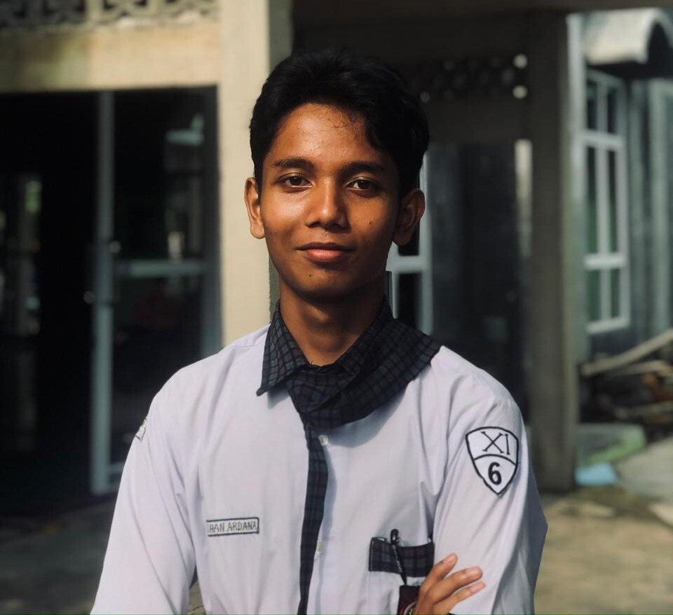

Aku anak SMA yang suka ngulik dunia IT, hobi lari sore, dan biasanya ngabisin waktu luang dengan main game, mulai dari game AAA sampai game indie.
Sekarang aku sekolah di SMA Negeri 4 Metro kelas 11. Sehari-hari aku tinggal di Metro buat sekolah, tapi asalku dari Bekri.
Buat aku, IT itu seru banget karena selalu ada hal baru yang bisa dipelajari. Dan biar gak bosen di depan monitor terus, aku biasanya seimbangin dengan lari atau main game bareng temen.
Pendidikan Sekolah Menengah Atas (Kelas 11).
Pendidikan Sekolah Menengah Pertama.
Pendidikan Sekolah Dasar.
Pendidikan Anak Usia Dini.
Tempat kelahiran.
Beberapa teknologi web dasar dan tools yang sering aku pakai:
Game yang biasa aku mainin kalau lagi pengen santai:
Olahraga rutin biar badan tetep fit dan gak kaku:
Punya ide proyek web seru, mau ngajakin mabar game, atau mau berbagi rute lari yang asyik di sekitaran Metro? Hubungi aku lewat tombol di bawah ya!